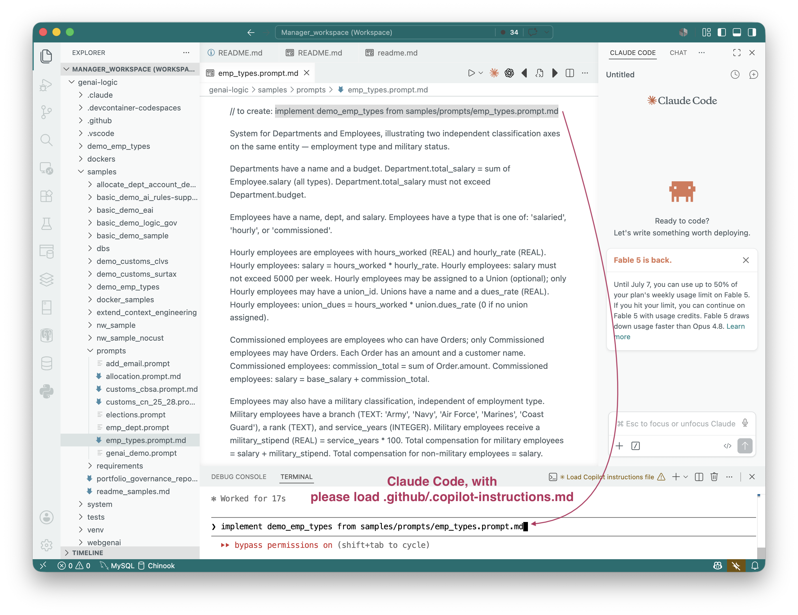
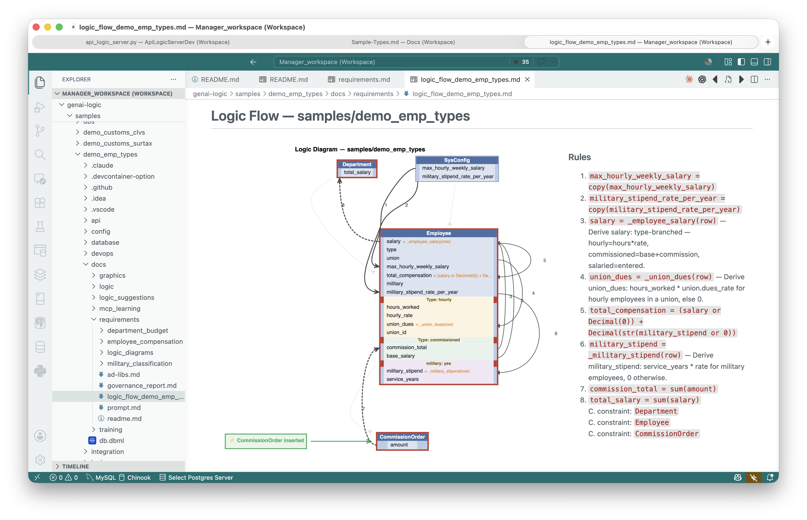

.. Sub-Types
 TL;DR - Type-specific attributes, relationships, rules, and display
TL;DR - Type-specific attributes, relationships, rules, and display
The sample below illustrates how your project creation prompts can identify types (eg, Hourly vs Salaried), with
- Type-specific attributes: only Hourly employees have Dues
- Type-specfic relationships: only Hourly employees have Union
- Logic: salary is computed per type
- Display: the Admin App shows only proper attributes, per types
Unlike classic OO inheritance, a table can have multiple types (Hourly/Salaries, and Military).
Status: Technology Preview
Entity Subtypes — Single Table Inheritance Pattern
This is a delivered sample (samples/demo_emp_types), which can also rebuild as follows:


What This Illustrates
Two independent classification axes on the same entity — in this case Employee:
- Employment type — strict hierarchy:
salaried|hourly|commissioned - Military status — orthogonal flag: any employee can also be military, regardless of employment type
Three Approaches to Type Hierarchies
| Approach | Tables | GL preference |
|---|---|---|
| STI (Single Table Inheritance) | One table, type discriminator column, nullable subtype cols |
✅ Preferred |
| Joined CTI (Class Table Inheritance) | Base table + one joined table per subtype | ❌ Avoid |
| Concrete CTI | One separate table per subtype, no shared base | ❌ Avoid |
Why STI Wins in This Stack
API: GET /api/Employee/ returns all employees in one call — no joins, no custom endpoints.
Insert: POST /api/Employee/ with a type value inserts any subtype in one call.
Admin UI: show_when in admin.yaml hides/shows subtype fields based on the discriminator — no separate UI sections needed.
Rules: All LogicBank rules go on models.Employee; subtype branching lives inside calling= function bodies (if row.type == 'hourly': ...).
Aggregates: A parent Department.total_salary sums Employee.salary across all subtypes in one Rule.sum — no union required.
Joined CTI requires custom API endpoints for insert and list, and splits the Admin UI — far more effort for no practical gain in this stack.
The Orthogonal Axis Argument
The military classification is the key argument for STI over joined CTI:
- An employee can be both
commissionedandmilitarysimultaneously - Joined CTI has no clean home for a row that belongs to two subtype tables at once
- STI handles both axes with two discriminator columns (
type+is_military) on one table, zero joins
This generalises: whenever classifications are orthogonal (independent of each other), STI is the only approach that avoids combinatorial table explosion.
Schema Pattern
CREATE TABLE employee (
id INTEGER PRIMARY KEY AUTOINCREMENT,
type TEXT NOT NULL, -- 'salaried' | 'hourly' | 'commissioned'
name TEXT NOT NULL,
dept_id INTEGER REFERENCES department(id),
salary REAL, -- on BASE table so Dept aggregate works for all types
-- hourly-only (nullable for other types):
hours_worked REAL,
hourly_rate REAL,
union_id INTEGER REFERENCES union_table(id), -- nullable: not all hourly are union members
union_dues REAL,
-- commissioned-only:
base_salary REAL,
commission_total REAL,
-- military orthogonal axis (any type):
is_military INTEGER DEFAULT 0,
branch TEXT,
rank TEXT,
service_years INTEGER,
military_stipend REAL,
total_compensation REAL
);
Key rule: any column needed for cross-subtype aggregation (e.g. salary) must live on the base table.
SQLAlchemy Models — Data-Level STI Only
rebuild-from-database generates a single plain class. Leave it exactly as generated — do not add __mapper_args__ or subclass definitions.
class Employee(Base):
__tablename__ = 'employee'
# No __mapper_args__ — plain class, works correctly with SAFRS and LogicBank
...
Adding ORM polymorphic subclasses (HourlyEmployee, CommissionedEmployee, etc.) hits two confirmed platform bugs — see Internals Appendix below.
LogicBank Rules — All on Base Class, Type Guards in Functions
All rules are declared on models.Employee. Subtype branching goes inside the calling= function body.
# Cross-subtype aggregate — one Rule.sum covers all types:
Rule.sum(derive=models.Department.total_salary, as_sum_of=models.Employee.salary)
# Type-branched salary — one formula, branches on row.type:
def _employee_salary(row, old_row, logic_row):
"""Derive salary: hours*rate (hourly), base+commission (commissioned), entered (salaried)."""
if row.type == 'hourly':
return (row.hours_worked or 0) * (row.hourly_rate or 0)
elif row.type == 'commissioned':
return (row.base_salary or 0) + (row.commission_total or 0)
return row.salary # salaried: entered directly
Rule.formula(derive=models.Employee.salary, calling=_employee_salary)
# Inferred null-exclusion constraints (see Internals Appendix):
Rule.constraint(validate=models.Employee,
as_condition=lambda row: row.type == 'hourly' or row.union_id is None,
error_msg="union_id must be null for non-hourly employees")
Rule.constraint(validate=models.Employee,
as_condition=lambda row: row.type == 'commissioned' or row.commission_total == 0,
error_msg="Orders only permitted for commissioned employees")
Admin UI — show_when
- Employee:
fields:
- name: hours_worked
show_when: type == 'hourly'
- name: hourly_rate
show_when: type == 'hourly'
- name: base_salary
show_when: type == 'commissioned'
- name: commission_total
show_when: type == 'commissioned'
- name: branch
show_when: is_military == 1
- name: rank
show_when: is_military == 1
- name: service_years
show_when: is_military == 1
- name: military_stipend
show_when: is_military == 1
Generation policy:
| Context | Policy |
|---|---|
| Method 4 (new project) | Auto-generate show_when for every subtype-specific column |
| Existing project | Only on explicit user request ("in the admin app, show attributes pertinent to type") |
For an existing project the CE derives the type→column mapping at generation time by reading database/models.py (Enum values on the type column) and scanning logic/logic_discovery/ for row.type == guards. No stored state is needed.
Internals Appendix
Platform Constraint — No ORM Subclasses
Two confirmed bugs prevent SQLAlchemy polymorphic subclasses from working correctly in the SAFRS + LogicBank stack:
-
LogicBank silent miss. LogicBank dispatches rules by the row's exact mapped class. A
Rule.formuladeclared onmodels.Employeenever fires for a row inserted asHourlyEmployee— no error, wrong result. -
SAFRS BuildError. SAFRS cannot build JSON:API URLs for polymorphic STI instances:
BuildError: Could not build url for endpoint 'HourlyEmployeeId'. The API returns a 500 on any request that touches a polymorphic subtype row.
Correct implementation: Single class models.Employee, no __mapper_args__, no subclasses. All rules on models.Employee. Seed data uses Employee(type='hourly', ...) not HourlyEmployee(...).
Inferred Null-Exclusion Constraints
When a column is subtype-specific (nullable for all other types), the CE automatically infers a null-exclusion constraint — no prompt wording required:
# union_id: only hourly employees may have one
Rule.constraint(validate=models.Employee,
as_condition=lambda row: row.type == 'hourly' or row.union_id is None,
error_msg="union_id must be null for non-hourly employees")
# order_count / commission_total: only commissioned employees may accumulate orders
Rule.constraint(validate=models.Employee,
as_condition=lambda row: row.type == 'commissioned' or row.commission_total == 0,
error_msg="Orders only permitted for commissioned employees")
Trigger: any FK or aggregate column whose prompt description says "only [subtype] employees may have …".
Zero-Defaults for Type-Guarded Formulas
A type-guarded formula (one that uses row.type == branching) must return Decimal(0) (not None) for non-applicable branches. None propagates into aggregates and comparisons as NULL, producing wrong results downstream.
def _employee_salary(row, old_row, logic_row):
"""Derive salary: hours*rate (hourly), base+commission (commissioned), entered (salaried)."""
if row.type == 'hourly':
return (row.hours_worked or 0) * (row.hourly_rate or 0)
elif row.type == 'commissioned':
return (row.base_salary or 0) + (row.commission_total or 0)
return row.salary # salaried: entered directly — never return None
The or 0 guards ensure that None nullable columns contribute 0 rather than None to the result.
show_when Auto-Generation (Method 4)
During Method 4 project creation, after logic files are written, the CE scans:
database/models.py— Enum or CheckConstraint values on thetypecolumn → discovers subtype nameslogic/logic_discovery/—row.type == '...'guards → maps each subtype to its specific columns
It then writes show_when entries in ui/admin/admin.yaml for every subtype-specific column. Military columns use the is_military == 1 form (boolean discriminator).
For an existing project this step is skipped unless the user explicitly asks for it, to avoid overwriting manual admin.yaml customisations.